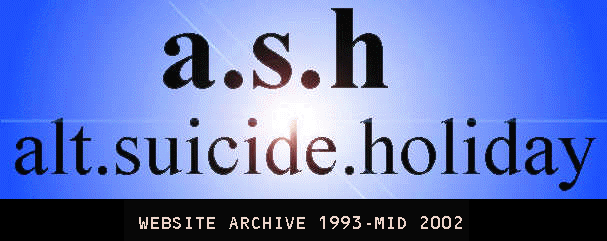

These pages best viewed with an HTML 4 or above compatible browser. However, use of frames is kept to an absolute minimum to enable easy viewing with text browsers.
These pages deal with serious topics of a mature nature. Some users may find the content morally or ethically unpleasant. If you think you are one of these people, please do not proceed further. If you do proceed, you do so by your own choice and agree not to raise any complaints with either the author of these web pages, or the authors of the work contained here, or the site on which they are stored.